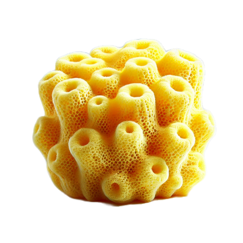

TEXT
Foto
VAK MET TEXT
📱
Korte tekst of feed...
📝
Lopend tekstblok dat langer doorloopt...
Ander breed wisselend tekstblok...
Blokje

VAK MET TEXT
Korte tekst of feed...
Lopend tekstblok dat langer doorloopt...
Ander breed wisselend tekstblok...